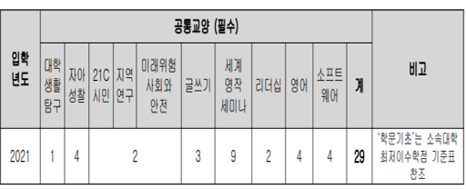

졸업코끼리
영어통번역학전공
2021학년도
취득학점계산
필수과목
최저학점이수
교양교육과정
졸업요건
졸업요건
아래 항목들을 만족해야 졸업 신청이 가능합니다.
취득학점
130학점
평점평균
2.0/4.5
외국어시험
TOEIC:800점
영어(외국어) 강의
4과목 이상
졸업논문
[졸업논문 Capstone Project 1, 2]
수강을 통한 졸업논문 완성 및 제출
※ 졸업논문의 경우 캡스톤 프로젝트를 수강한 후 영어통번역학과 홈페이지의 내용을 참고해 형식에 맞춰 제출해야합니다!
교양교육과정
아래 수업들을 모두 수강해야 졸업이 가능합니다.

대학생활탐구(1학점)
자아성찰(4학점)
21C 시민, 지역 연구, 미래위험(2학점)
글쓰기(3학점)
세미나(9학점)
리더십(2학점)
영어(4학점)
소프트웨어(4학점)
현재 이수 학점: /29
최저학점이수
졸업을 위해 채워야하는 학점입니다. 총 130학점을 이수해야합니다.
교양
공통교양
29~31
핵심교양
-
학문기초, 외국어
6
전공
단일전공
60
복수전공
주전공
36
주전공
36
필수과목
졸업을 위해 채워야하는 학점입니다. 총 130학점을 이수해야합니다.